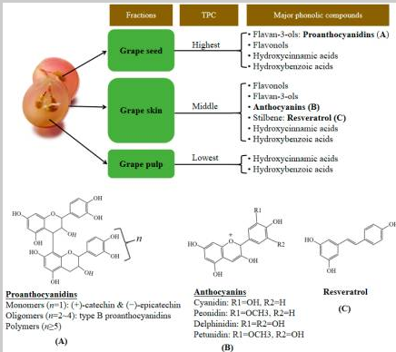

Comparació de la IA i Google Acadèmic
Treball de recerca sobre el raïm de cultiu ecològic i convencional.
Elaborat per Victoria Mabel
Descobreix el projecte1. Objectiu del treball
Aquest treball té com a objectiu comparar la informació proporcionada per la intel·ligència artificial (IA) amb la informació que es pot trobar en articles científics mitjançant Google Acadèmic.
La fruita que estudiaré és el raïm 🍇. Investigaré si hi ha diferències entre el raïm de cultiu ecològic i el de cultiu convencional pel que fa als nutrients i altres compostos d'interès.
Alguns aspectes que es poden investigar són les vitamines, els minerals, els polifenols i altres compostos antioxidants. Les diferències s'han de comprovar amb estudis científics.
2. Què és la intel·ligència artificial?
Per a aquest treball utilitzaré un model de llenguatge gran (LLM, de l'anglès Large Language Model), com ara ChatGPT, Gemini, Claude, Copilot, Grok o Perplexity.
Aquests sistemes poden ajudar a explicar conceptes, resumir informació i proposar paraules clau per a una cerca. Tanmateix, poden cometre errors o proporcionar referències que cal verificar.
Per això, les respostes de la IA no es consideraran proves científiques per si soles. Comprovaré les afirmacions amb fonts originals sempre que sigui possible.
3. Què és Google Acadèmic?
Google Acadèmic és un cercador que permet localitzar articles científics, tesis, llibres i altres documents acadèmics. Els resultats s'han de revisar per comprovar l'autoria, la data, la metodologia i la qualitat de cada estudi.
Pots consultar-lo aquí: Google Acadèmic .
4. Comparació de les fonts d'informació
| Aspecte | Intel·ligència artificial | Google Acadèmic |
|---|---|---|
| Funció | Explica i resumeix informació. | Ajuda a trobar publicacions acadèmiques. |
| Velocitat | Pot donar una resposta ràpidament. | Cal cercar i revisar els resultats. |
| Fiabilitat | Pot cometre errors i donar dades incorrectes. | Permet consultar estudis, però cal valorar-ne la qualitat. |
| Referències | Les referències s'han de comprovar. | Pot mostrar articles i les seves dades bibliogràfiques. |
| Utilitat | Ajuda a entendre conceptes i preparar cerques. | Ajuda a localitzar fonts científiques originals. |
5. Cerca d'articles científics
Per investigar les possibles diferències entre el raïm ecològic i el convencional, buscaré estudis relacionats amb els polifenols, els antioxidants i la composició nutricional.
És important llegir el resum de cada article i comprovar quins raïms s'han estudiat, com s'ha fet l'experiment i quins resultats s'han obtingut.
Cerques recomanades
- Raïm ecològic i convencional: polifenols
- Antioxidants del raïm i tipus de cultiu
- Compostos fenòlics de la pell i les llavors del raïm
Aquestes són cerques per trobar articles, no conclusions científiques. Cal llegir els estudis abans d'afirmar que un tipus de raïm és millor que l'altre.
6. Compostos presents en el raïm
El raïm conté diferents compostos que es poden estudiar. La pell, les llavors i la polpa no tenen necessàriament la mateixa composició. Alguns compostos fenòlics, per exemple, es troben especialment a la pell i a les llavors.

El gràfic s'ha d'interpretar tenint en compte la informació que hi apareix i la font original. No s'han d'extreure conclusions que les dades no permetin demostrar.
7. Conclusions
La intel·ligència artificial i Google Acadèmic són eines diferents que es poden complementar. La IA pot facilitar la comprensió d'un tema i ajudar a preparar una cerca, mentre que Google Acadèmic permet localitzar publicacions científiques per comprovar la informació.
En el cas del raïm ecològic i convencional, no es pot afirmar que un sigui millor només a partir d'una resposta de la IA o d'un únic article. Cal comparar estudis fiables i tenir en compte les condicions de cultiu i els mètodes utilitzats.
Per tant, la millor manera de fer aquest treball és utilitzar la IA com a ajuda i verificar les dades amb fonts científiques.
Tornar a l'inici